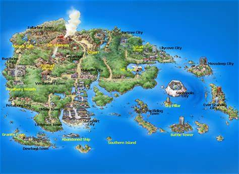
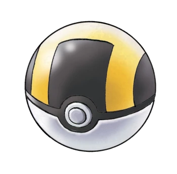

Sobre a região
Hoenn é uma região do mundo Pokémon, cheia de diversidade natural, com desertos, florestas, montanhas e um arquipélago gigante. Ela é famosa por suas batalhas contra equipes vilãs, Magma e Aqua, que tentam controlar os lendários Groudon e Kyogre para mudar o clima do mundo.
Além das batalhas, Hoenn tem cidades icônicas como Sootopolis, construída dentro de um vulcão submerso, e Fortree, onde as casas ficam nas árvores. A região também introduziu o sistema de concursos Pokémon, dando aos treinadores mais formas de brilhar além das batalhas!
- 
-

-